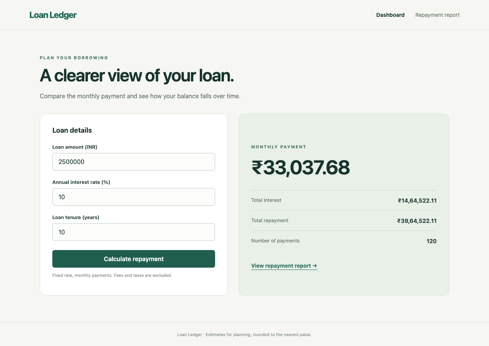
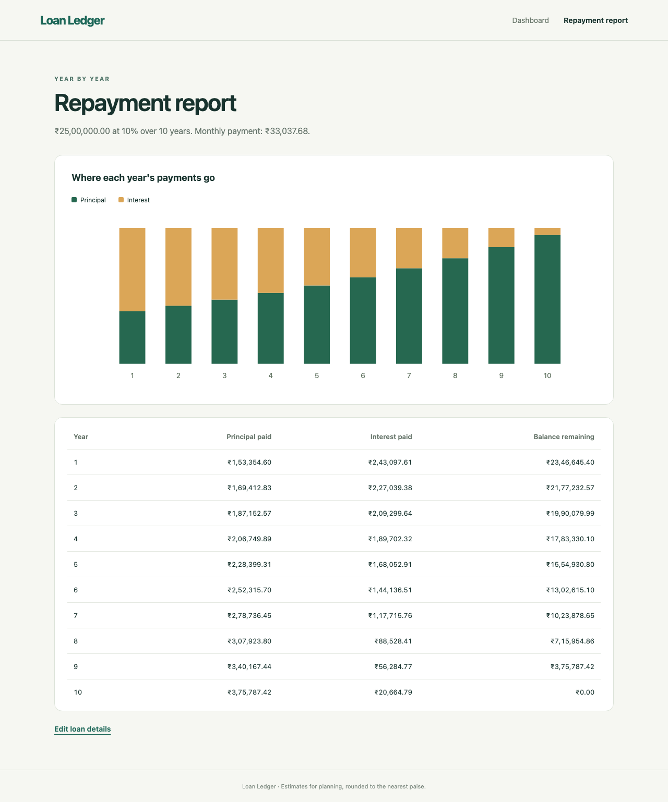
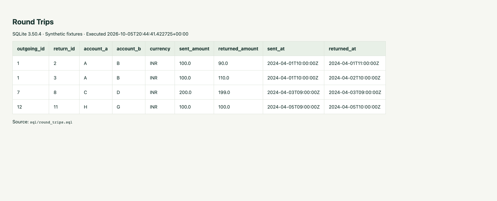
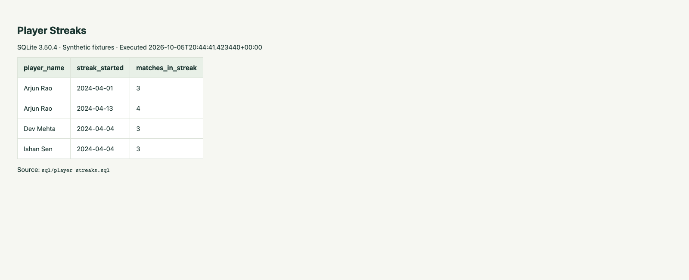

Section A: Loan Ledger, UI/API automation, SQL queries and locator healing.
The requested JSONPlaceholder rejection checks fail: all three invalid inputs received 201 Created. The four broken locator cases also fail intentionally. These results are kept visible.
| Suite | Result | Evidence |
|---|---|---|
| Loan UI | 18 passed | HTML report · Log |
| API rejection contract | 3 failed | HTML report · Log |
| API observed behavior | 3 passed | HTML report |
| SQL | 12 checks passed | Log · Result JSON |
| Broken locators | 4 failed as intended | HTML report |
| Healing validation | 5 passed | HTML report |
| Combined assessment | 18 passed, 3 failed | HTML report · Log |
Runtime versions and counts · README



